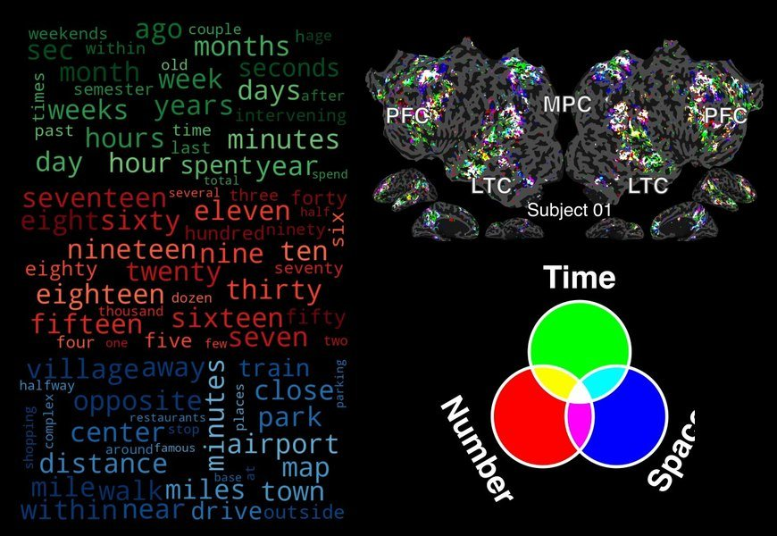
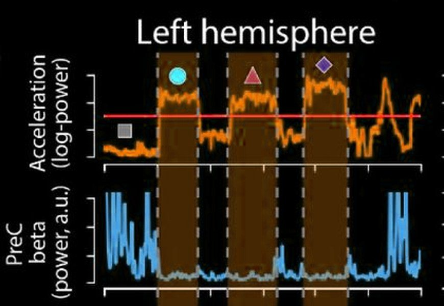
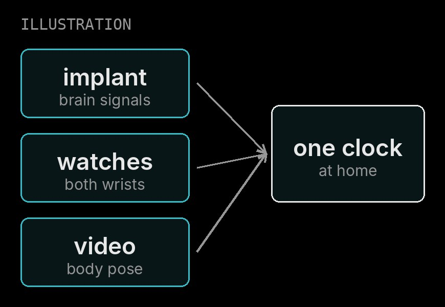
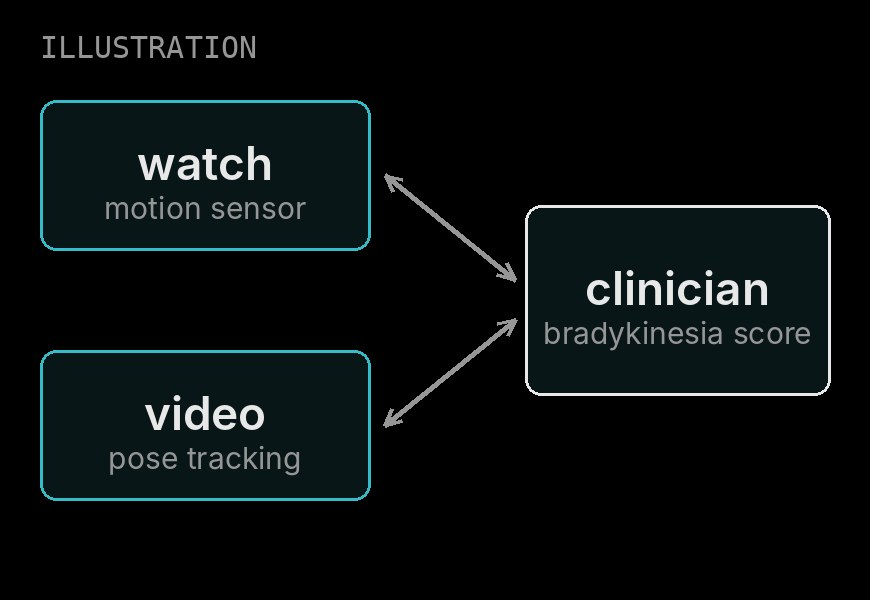

Research
Papers, talks and tools, grouped into three areas.
Interpretable models
Brain models whose weights can be read one concept at a time.
The models that predict brain activity best use features taken from language models. Those features are correlated, so many different sets of weights give the same prediction, and prediction accuracy cannot tell them apart. The weights a fit returns are one arbitrary pick among them.
In these papers I replace those features with sparse ones, one concept per axis. Each weight then has one meaning, and a map of that weight across the brain shows where the concept is represented. The birdsong project is earlier work with the same aim on a different signal: recover the dynamics that produced a song from the recording alone.
-
-

-
Dense measurement
One long, natural recording in place of many small experiments.
The usual way to test whether two kinds of thought share brain regions is to run one experiment for each and compare the regions each one activates. Each experiment has its own task and its own confounds, so the overlap depends partly on how the experiments were designed.
A story avoids this. A person telling a story mentions numbers, places and times in the same stream of words, so one recording and one model give a map for each, and the maps can be compared directly. This only works if the model’s features can be separated, which is what the papers under Interpretable models are for.
Closed-loop instruments
Deep brain stimulation for Parkinson’s disease is set during a clinic visit and then runs unchanged for months, while the symptoms change through the day. A stimulator that adapts has to know what the person is doing.
A clinic visit cannot measure that. The behavior that matters happens at home, over hours, and the brain signal used to control the stimulator is itself changed by the stimulation. So the first job was recording: implanted electrodes, wrist watches and video running together in a person’s home, synchronized closely enough to compare.
The second was to test whether movement and the brain signal track each other well enough to drive the stimulator.
-

-

-
